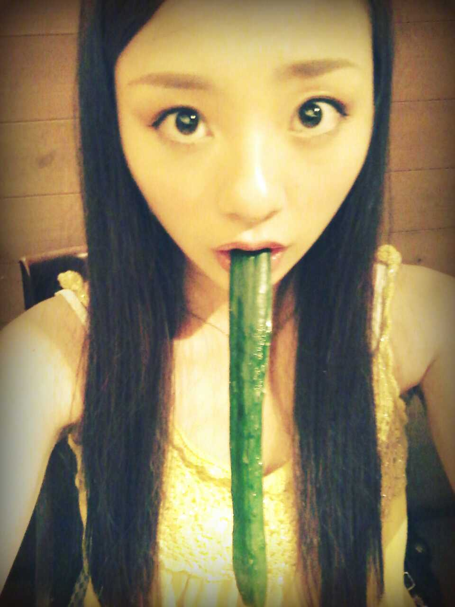
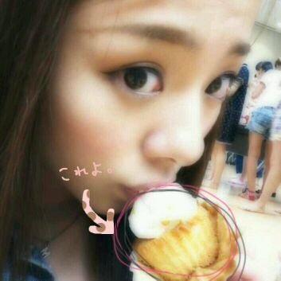

・・・(=・ω・=) ?
おいしっ おいしっ
きゅーり様 〃ω〃。

ろってぃーだよ*^^*
コメントいいーっぱい )))
ありがとございます !
とってもとっても
嬉しい気持ち =・ゝ・=☆
前のブログの写真
ケーキぢゃなくて
おにぎりに見えるって
コメント ちらほらと
見られましたけれども...
これはドヤー★!!?

ねっ?*・ω・*
ケーキでしょ?
この前の イオンツアー☆
神戸に続き
大阪 京都にも行ってきました !
京都のイオンが
奈良と京都の境目で
控え室は奈良だけど
ステージは京都っ♪
すごいー(・ω・)
大阪と京都は
みにトークショーと握手会って
言いつつも
歌ったり踊ったりしたね*^^*
喜んでくれて
自分達もすごく嬉しかった*^^*
ありがとうございます(^ー^)
よしっ★
来週からの
公演の練習たいへんだ><
頑張るってばねーーー!!!
以上っ ろってぃーでしたー(^ω^))
のし